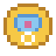
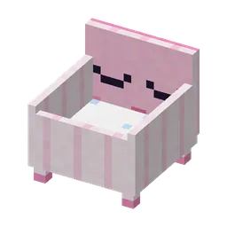
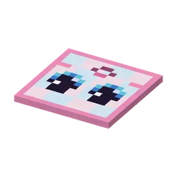
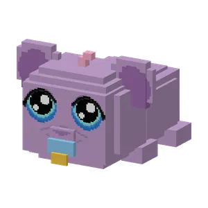
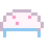
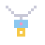

Bring the babyguhtjes that crawled away back to Juf Knuffel.
Breng de weggekropen babyguhtjes terug naar Juf Knuffel.
De Knuffelcreche
A giant baby guh with a pacifier. Juf Knuffel looks after all the babyguhtjes of the dal. The calm care round: give each baby a babyflesje, a schone luier, tuck it into its wiegje and sing a slaapliedje (a little rhythm game; four songs for the slaapliedjes page). The minigame: babies crawl off everywhere, put them back in their cribs in time for speenmunten and a highscore.
Een reuzenbabyguh met een speen. Juf Knuffel past op alle babyguhtjes van het dal. De rustige verzorgronde: geef elk babytje een babyflesje, een schone luier, stop het in zijn wiegje en zing een slaapliedje (een klein ritmespelletje; vier liedjes voor de pagina slaapliedjes). De minigame: babyguhtjes kruipen overal heen, breng ze op tijd terug naar hun wiegje voor speenmunten en een highscore.




The babyguhtjesDe babyguhtjes
Tiny, purple and never still. Njeg!
Piepklein, paars en nooit stil. Njeg!
Prizes: clothesPrijzen: kleding

Babymutsje 5 speenmunten Rompertje 8 speenmunten
Rompertje 8 speenmunten
Speenkettinkje 4 speenmunten
Highscores in the GuhdexHighscores in de Guhdex
- Babyguhtjes terugbrengen
See alsoZie ook
 KnuffeldalStructuresBouwwerken
KnuffeldalStructuresBouwwerken Juf KnuffelCharactersPersonages
Juf KnuffelCharactersPersonages Clothing set: De KnuffelcrecheKledingset: De KnuffelcrecheClothesKleding
Clothing set: De KnuffelcrecheKledingset: De KnuffelcrecheClothesKleding